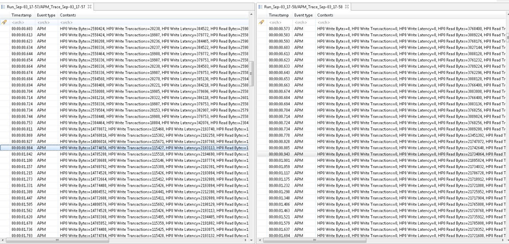

Events Editor
The Events editor shows the basic trace data elements (events) in a tabular format. The editors can be dragged in the editor area so that several traces may be shown side by side, as shown in the figure below.

The header displays the current trace name. The page displays the following fields.
- Timestamp: the event timestamp
- Type: the event type (PS/ APM/ Microblaze)
- Content: the raw event content obtained from the hardware server
The first row of the table is the header row. You can search and filter the information on the page, using this row.
The highlighted event is the current event and is synchronized with the other views. If you select another event, the other views will be updated accordingly. The properties view will display a more detailed view of the selected event.
An event range can be selected by holding the Shift key while clicking another event or using any of the cursor keys ( Up', Down, PageUp, PageDown, Home, End). The first and last events in the selection will be used to determine the current selected time range for synchronization with the other views.
The Events editor can be closed, disposing a trace. When this is done, all the views displaying the information will be updated with the trace data of the next event editor tab. If all the editor tabs are closed, then the views will display their empty states.